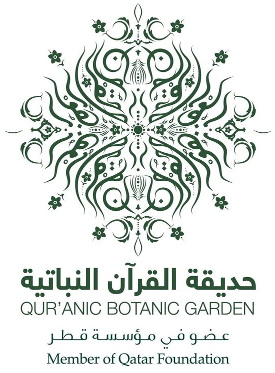
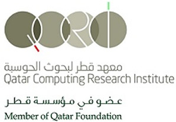

Ali Abbas
An innovator just trying to make use of technology to help people around the world. With the tools and skills he has acquired over the years he continually works on projects that will help people live a simpler and better life. Or in a business context, how can technology help make businesses more efficient and innovative. He is also looking to pursue graduate studies in the field of Human Computer Interaction (HCI) to further enhance the experience of interacting with technology.
Education
Carnegie Mellon University
Minor: Business Administration
Cumulative GPA: 3.70
University Honors
College Honors
August 2014 - May 2018
The British School of Kuwait
AS-Level: 4 A's
Leadership Award
Excellence in English Award
IGCSE: 11 A*'s
September 2004 - June 2014
Experience
Honors Thesis Researcher
Working on research paper tackling the issue of doctor-patient communication in Qatar as part of a senior honors thesis project. The problem being that majority of the doctors in Qatar, and the Middle East, only speak English or Arabic, and the majority of the patients, being migrant workers, only speak Hindi, Urdu or Nepali, so these patients struggle to communicate at hospitals. The research question "How can technology help bridge the communication gap between doctors and patients in Qatar?" is being answered with a solution as, currently under development, a visual mobile application making use of graphic symbols and cartoon illustrations as the method of communication.
August 2017 - Present
Research Assistant
Working on an ongoing research called "Arabic Author Profiling" under the Qatar National Research Fund and Carnegie Mellon University in collaboration with several other institutes around the world. The project aims to determine who the author of online Arabic text is based on the way they write Arabic, possibly even a pinpoint location of which region or country in the Arab world they might be from. I have been in charge of collecting online data by writing Python programs and running scrapes of known websites and saving that data on an offline repository. Project website can be found here, currently developing new upgraded website.
August 2017 - Present
Course Assistant
Helping Professors in several tasks for each semester, involving tasks like grading homeworks and exams and assisting to conduct classes by preparing course content, as well as running workshops and assisting students in their homeworks in office hours. I have been a Course Assitant for the following courses: Introduction to Data Structures (Java), Healthcare Data Analytics and Big Data, Mobile Web App Design and Development, Human Computer Interaction and Testing
August 2015 - Present
Innovation in Information Systems
Worked with a team of 5 students, designed and implemented two information systems solutions as part of the capstone project for Information Systems majors.
First project made of use of the Internet of Things concept with a Raspberry Pi and several sensors to create a prototype "Sensory Glove" to help blind or visually impaired people cook and navigate in the kitchen . Students will be challenged to produce "proof of concept" systems or prototypes that are fully documented, tested, and ready to present for external evaluation.
Second Project, "QatarHelp", is a web application that allows customers to be able to request any task or service and the developed system connects them with someone who is willing to carry out the task for them. This project won as one of the best business ideas in a CMU competition judged by several industry leaders. Prototype of web app can be found here. Currently being established as a startup.
August 2017 - December 2017
Software Developer Intern
Worked with a group of 4 people, built a desktop software that works as an automated web crawler to aggregate all news and mentions of the organization on social media platforms like Twitter and Facebook, and news articles and videos from Google and YouTube. The software also documented and saved all online content as PDF and metadata in an offline repository. A demonstration video of this project can be found on my YouTube channel here.
May 2017 - July 2017

consumer business unit intern
Working in the Terminals field under the Marketing department, was responsible for stock and supply chain management by coordinating with individual Vodafone vendors, warehouse management, suppliers(like Samsung), and other departments within the company to control supply of mobile devices being sold at the shops. Used softwares like SAP and Microsoft Excel for keeping track of devices. Also responsible for launching promotional campaigns and new device offers at Vodafone shops.
July 2016 - August 2016

Mobile App Developer
Worked with one partner on a research project to develop a medical translation application to help patients communicate with doctors in the Middle East. Built an Android and iOS application using C# to create a common backend and then used Xamarin through Microsoft Visual Studio to create native user interfaces for both platforms. Made use of agile software development tactics like scrum. Conducted field and user studies to test and improve the app by visiting emergency room of Hamad Hospital and Labor City clinic.
May 2016 - June 2016

Networks & Game Developer
Worked on three different academic projects to enhance programming skills.
First Project, "World Domination", is a desktop strategic turn-based game developed using Python 2.7 and making use of Sockets to allow two players to be able to play over the network.
Second project, is a re-creation of a popular mobile app game called "Jetpack Joyride" that was also completely made using Python 2.7.
Third project, was an imitation of "Facebook" as a desktop application that allows multiple users to be able to chat with each other simultaneously over the network with several other features like adding or deleting friends, etc. much like the social media website. This application was developed entirely in Java and also made use of Sockets for networking.
August 2014 - December 2015
Skills
- Python 2.7
- Java
- Ruby on Rails
- C#
- C++
- SQL
- Cross Functional Teams
- Agile Development & Scrum
- Project Management
- Event Planning & Management
Interests
*** UNDER CONSTRUCTION ***
*** UNDER CONSTRUCTION ***
Awards & Certifications
- Best Overall App Award - Annual Carnegie Mellon Qatar Hackathon
- 1st Place - Qatar Universities Debating League (2 years)
- 1st Place - GMC Triathlon - Universities category
- 3rd Place - Qatar Universities Football League
- 2nd Place - Education City Football League
- 3rd Place - The Apprentice competition (small business startup)
- Team Kuwait - World Schools Debating Championships (WSDC) - Thailand 2014
- Team CMU - World Universities Debating Championships (WUDC) - Mexico 2017
- Certified schools debate judge
- Certified universities debate judge